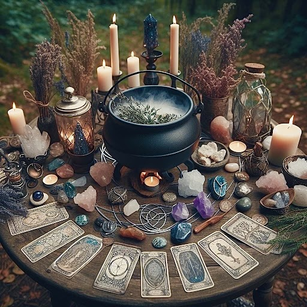
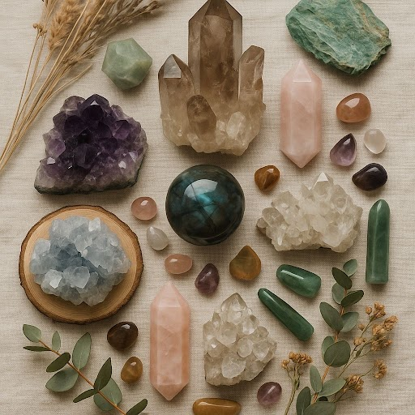

Supplies
Learn about candles, herbs, crystals, and journals used in beginner practices.
View SuppliesWitchcraft is often misunderstood as devil worship, but many practices are nature-based and do not involve the concept of the devil at all.